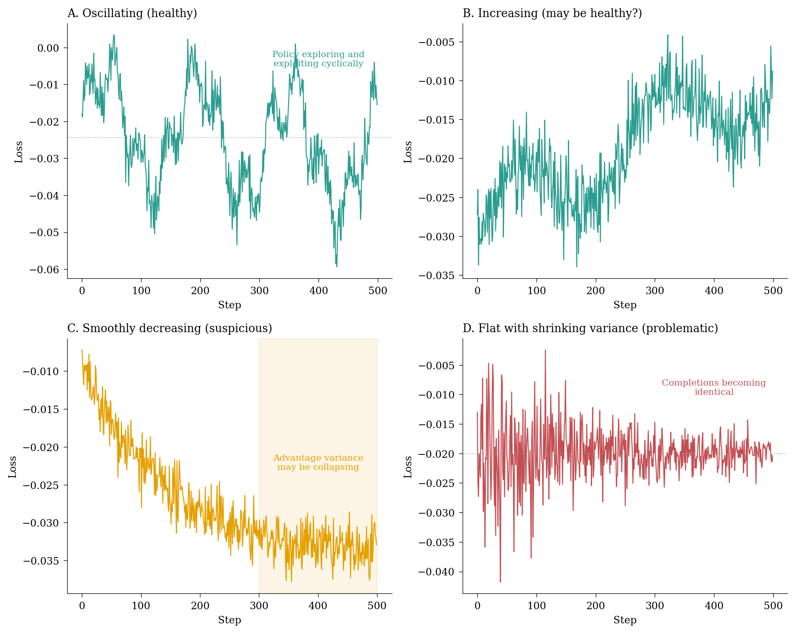
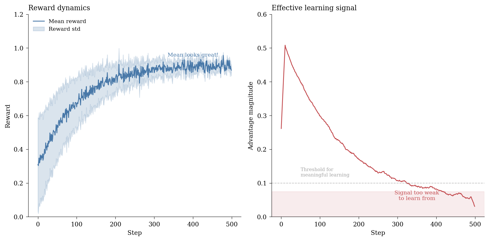
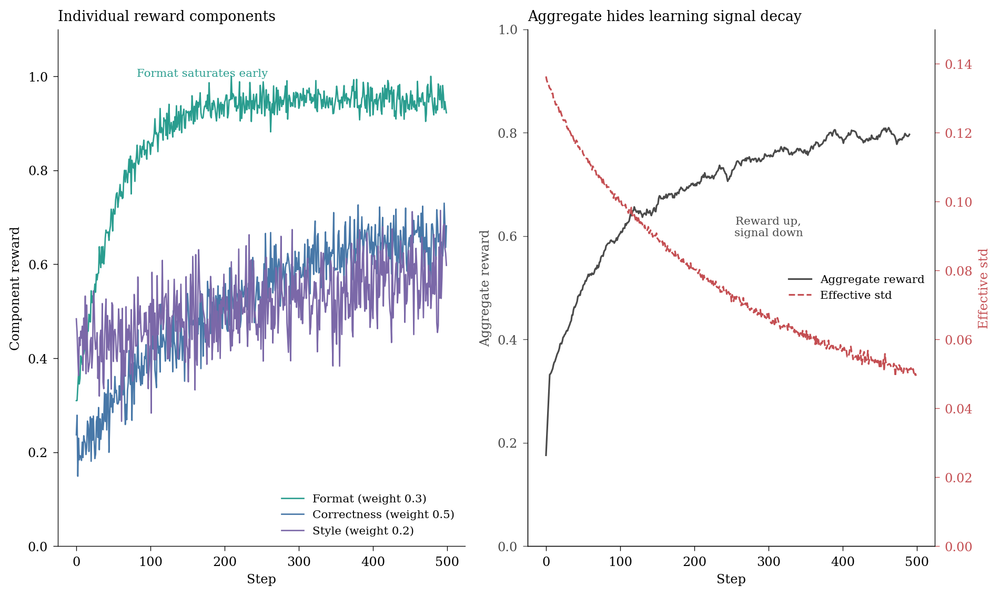
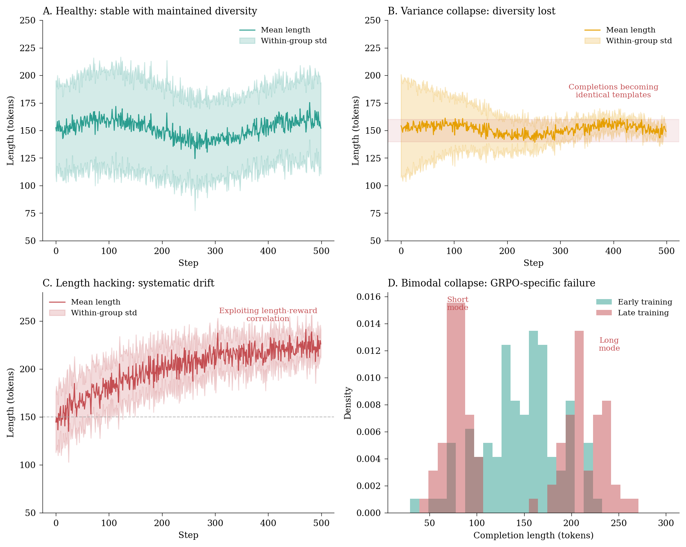
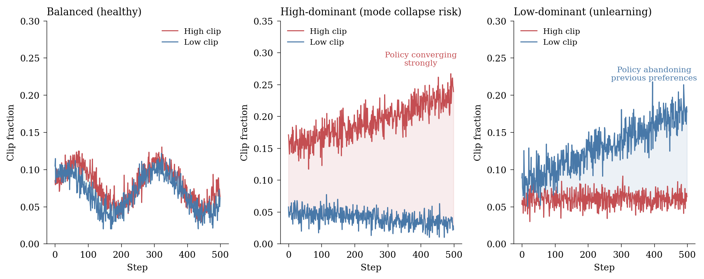
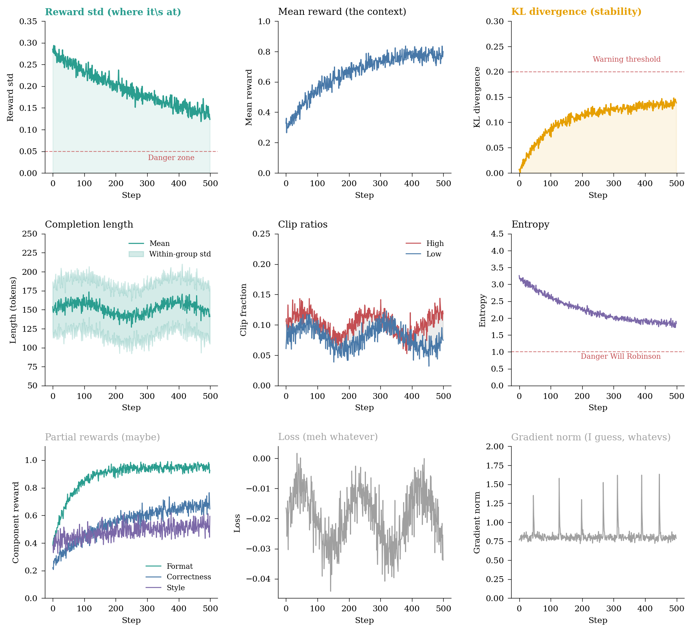

![]()

The post-training instrument cluster – Part III
AI
LLMs
LLMOps
post-training
reinforcement learning
GRPO
The part where you have to take all that you have learned and work hard to completely unlearn it. Here be dragons.
TipHey, I’m writing a book about this!
I’m actually writing a book about this stuff. It turns out there isn’t a lot of literature on how to do post-training at the level too big for single-GPU laptop-sized hobby projects and requiring enterprise reliability on one hand, but not quite at the scale of multi-team distributed post-training you’d get in foundation labs. That’s a problem, because a lot of the current value in fine-tuning applications comes exactly out of that large, crucial market. I am in the last phases of putting together the manuscript for The Frontier Playbook, a set of curated tactics and techniques for real world operationalisation of LLMs. Sign up for updates here.
TipThis is Part III of a series
This post builds on Part I (SFT monitoring) and Part II (RL monitoring fundamentals). If you haven’t read those yet, I recommend starting there – this post assumes familiarity with the basic instruments and the general philosophy of comprehensive training instrumentation. Here, we dive deep into the peculiarities of Group Relative Policy Optimisation (GRPO), where many of your hard-won SFT intuitions will actively mislead you.
In Parts I and II, we built an increasingly sophisticated instrument cluster for monitoring post-training runs. First came the eight instruments for supervised fine-tuning, then four more for preference optimisation and reinforcement learning. Together, they form a comprehensive dashboard for most training scenarios.
But GRPO is different. Not just different in the way that all RL methods are different from SFT – different in ways that can make experienced practitioners confidently misread their dashboards. The monitoring intuitions you’ve developed over years of watching loss curves descend gracefully towards convergence? They don’t apply here. The reward signal you’ve learned to trust as your north star in RL? It can lead you astray. Monitoring reinforcement learning is infuriatingly complex at the best of times, and GRPO arguably raises this to an entirely new level.
This post is about unlearning those intuitions and replacing them with ones appropriate for GRPO’s peculiar optimisation dynamics.
The GRPO paradigm shift
GRPO, developed by DeepSeek and described in the DeepSeekMath paper (Shao et al. 2024), takes a fundamentally different approach to policy optimisation than its predecessors. Where PPO maintains a separate value function to estimate advantages, GRPO computes advantages relative to a group of completions for the same prompt. This seemingly minor architectural choice has profound implications for monitoring.
Shao, Zhihong, Peiyi Wang, Qihao Zhu, Runxin Xu, Junxiao Song, Mingchuan Zhang, Y. K. Li, Y. Wu, and Daya Guo. 2024. ‘DeepSeekMath: Pushing the Limits of Mathematical Reasoning in Open Language Models’. arXiv Preprint arXiv:2402.03300.
The key insight behind GRPO is that you don’t need a value function if you can compare multiple completions directly. By generating several responses to each prompt and computing advantages relative to the group mean, GRPO sidesteps the value function entirely – and with it, many of the training instabilities that plague PPO.
The standard GRPO objective is:
\[\mathcal{J}_{\text{GRPO}}(\theta) = \mathbb{E}_{q \sim P(Q), \{o_i\}_{i=1}^G \sim \pi_{\theta_{\text{old}}}(\cdot|q)} \left[ \frac{1}{G} \sum_{i=1}^G \frac{1}{|o_i|} \sum_{t=1}^{|o_i|} \min\left( r_{i,t} \hat{A}_i, \text{clip}(r_{i,t}, 1-\epsilon, 1+\epsilon) \hat{A}_i \right) \right] \]
where \(r_{i,t} = \frac{\pi_\theta(o_{i,t} | q, o_{i,<t})}{\pi_{\theta_{\text{old}}}(o_{i,t} | q, o_{i,<t})}\) is the probability ratio and \(\hat{A}_i\) is the advantage computed relative to the group. You may have seen this formulation a few hundred times, but it’s worth pausing to really internalise what it means for monitoring, because it can be your sole fixed point of reference in what can rapidly become a sea of confusing signals.
The crucial difference is in how advantages are computed. Instead of using a learned value function, GRPO computes:
\[\hat{A}_i = \frac{r_i - \text{mean}(\{r_j\}_{j=1}^G)}{\text{std}(\{r_j\}_{j=1}^G)}\]
where \(r_i\) is the reward for completion \(i\) and the normalisation is computed across the group of \(G\) completions for the same prompt.
This has three important consequences for monitoring:
The loss is not what you think it is. The GRPO “loss” is a clipped surrogate objective that can increase, decrease, or oscillate – and all of these can be perfectly healthy behaviour. No “line goes down, all is well with the world” here.
Reward alone tells you nothing. Because advantages are normalised within groups, absolute reward values are meaningless. What matters is the distribution of rewards.
Completion diversity is load-bearing. The entire algorithm depends on having meaningful variance within completion groups. If completions collapse to similar outputs, the advantage signal vanishes.
Let me unpack each of these.
Why loss going down is not (necessarily) your friend
In supervised learning, we have a simple contract with the fabric of reality: loss measures how wrong we are, and while its absolute value is generally not very useful, its change/trend is. Training is supposed to make us less wrong, so loss going down is good. In GRPO, this contract is void.
This is perhaps the single most common source of confusion I see in practitioners new to GRPO. They see the loss oscillating or even trending upward and assume something has gone wrong. Usually, nothing has – they’re just reading the wrong instrument.
The GRPO loss is a surrogate objective, not a measure of model quality. It’s designed to provide useful gradients for policy improvement, not to track progress towards a goal–or as I like to tell my students, in GRPO, loss doesn’t belong to you. It’s the model’s tool to work with, not yours. Recall the formula we laid out above: loss actually measures the clipped probability ratio times the advantage, averaged across tokens and completions. This quantity can behave in counterintuitive ways:
Scenario 1: Loss decreases because the model is getting worse. If the model learns to produce completions that are all similarly mediocre, the advantage variance shrinks. Smaller advantages mean smaller loss values. The loss went down, but your model just got less capable of distinguishing good from bad responses. This is not good. Your model technically ‘improved’ but is, in fact, dying.
Scenario 2: Loss increases because the model is improving. As the model learns to strongly prefer high-reward completions, the probability ratios for those completions increase. If they exceed the clipping threshold, the clipped term becomes the active constraint. Loss goes up, even though the model is actually improving.
Scenario 3: Loss oscillates healthily. The policy is exploring, finding better responses, exploiting them, then exploring again. The loss oscillates because the advantage landscape is constantly shifting as the model improves.
The diagnostic implication, in my mind, is to stop watching the loss curve. If you must, watch it for sudden discontinuities, but don’t try to interpret its trend. The loss in GRPO is not a progress metric.
Why reward cannot substitute for loss
If loss isn’t meaningful, surely we can just watch the reward? After all, we’re optimising for reward, so higher reward means better model.
This is where GRPO’s group-relative nature becomes critical. The reward you see in your logs is typically the average reward across all completions. But GRPO doesn’t optimise for absolute reward – it optimises for relative advantage within groups. These are fundamentally different objectives with different failure modes.
This distinction matters more than it might seem. You can have a GRPO run where mean reward increases steadily while the model is actually getting worse at the task. Conversely, you can have a run where mean reward plateaus but the model is learning exactly what you want.
Consider a simple scenario with binary rewards (0 or 1) and group size 4:
- Epoch 1: Group completions get rewards [0, 0, 1, 0]. Mean = 0.25. The model learns to prefer the completion that got reward 1.
- Epoch 50: Group completions get rewards [1, 1, 1, 1]. Mean = 1.0. The model has learned to always produce high-reward completions.
The mean reward went from 0.25 to 1.0 – wonderful! But what’s the advantage signal in epoch 50? Zero. Every completion has reward 1, so every normalised advantage is 0. There’s nothing the model can learn from it, despite the perfect reward.
If this is sustained, you get reward saturation, the core problem of GRPO training. GRPO’s group emphasis requires diversity within groups to compute meaningful advantages. When all completions for a prompt achieve similar rewards, the learning signal vanishes, regardless of how high the absolute reward is.

The instruments that actually matter
So if loss and reward don’t tell you what you need to know, what does? GRPO monitoring requires a different set of primary instruments.
Instrument 1: reward standard deviation
The single most important metric for GRPO training is the standard deviation of rewards within completion groups. This directly measures the strength of your learning signal.
TRL logs this as reward_std by default when using GRPOTrainer. If you’re using a custom implementation, you should compute and log this yourself – it’s that important.
Reward standard deviation monitoring
from transformers import TrainerCallback
import numpy as np
from collections import deque
class RewardStdCallback(TrainerCallback):
"""Monitor reward standard deviation as primary health indicator."""
def __init__(self, min_std_threshold: float = 0.05, window_size: int = 50):
self.min_std_threshold = min_std_threshold
self.window_size = window_size
self.std_history = deque(maxlen=window_size)
def on_log(self, args, state, control, logs=None, **kwargs):
if logs is None:
return
if "reward_std" in logs:
std = logs["reward_std"]
self.std_history.append(std)
if len(self.std_history) >= 10:
stds = list(self.std_history)
# Trend: is variance collapsing?
logs["reward_std/trend"] = np.polyfit(
range(len(stds)), stds, 1
)[0]
# How close to danger zone?
logs["reward_std/headroom"] = std / self.min_std_threshold
# Warning if below threshold
if std < self.min_std_threshold:
logs["reward_std/warning"] = 1
print(f"WARNING: Reward std ({std:.4f}) below threshold "
f"({self.min_std_threshold}). Learning signal weak.")What to watch for:
- Reward std declining towards zero: The model is saturating. All completions are achieving similar rewards, and the learning signal is vanishing. This is the most common GRPO failure mode.
- Reward std too high and not declining: The model isn’t learning to prefer high-reward completions. Check your reward function and learning rate.
- Sudden drops in reward std: Often indicates the model has found a “shortcut” – a simple pattern that achieves reasonable reward without genuine task understanding.
Instrument 2: partial reward decomposition
If you’re using composite reward functions (and you probably should be), monitoring the decomposition of rewards into their components is essential. Different reward components can have wildly different dynamics, and aggregating them hides critical information.
Composite rewards are increasingly common in GRPO training. A typical setup might combine format compliance (does the output match the expected structure?), correctness (is the answer right?), and style (is it appropriately concise?). Each component can behave differently during training, and almost always, models learn them one by one.
Partial reward decomposition monitoring
class PartialRewardCallback(TrainerCallback):
"""Monitor individual reward components in composite reward functions."""
def __init__(self, reward_components: list[str], window_size: int = 50):
self.reward_components = reward_components
self.window_size = window_size
self.component_histories = {
comp: deque(maxlen=window_size) for comp in reward_components
}
def on_log(self, args, state, control, logs=None, **kwargs):
if logs is None:
return
for component in self.reward_components:
key = f"reward/{component}"
std_key = f"reward/{component}_std"
if key in logs:
value = logs[key]
self.component_histories[component].append(value)
if len(self.component_histories[component]) >= 10:
values = list(self.component_histories[component])
# Trend for this component
logs[f"{key}/trend"] = np.polyfit(
range(len(values)), values, 1
)[0]
# Also track component-specific std if available
if std_key in logs:
comp_std = logs[std_key]
# Warn if any component has collapsed variance
if comp_std < 0.01:
logs[f"{std_key}/warning"] = 1
print(f"WARNING: {component} reward has near-zero variance. "
"This component is no longer providing learning signal.")A common failure pattern: one reward component saturates early (e.g., format compliance reaches 100%) while others are still learning. The saturated component contributes zero variance, effectively reducing your reward dimensionality. If that component had high weight, it can drag down the overall learning signal significantly.

Instrument 3: completion length dynamics
We covered generation length in Part II, but it deserves special attention for GRPO because length manipulation is the easiest form of reward hacking, and GRPO’s group-relative structure makes it particularly susceptible.
Length hacking in GRPO often manifests differently than in PPO. Instead of uniformly longer or shorter outputs, you might see bimodal length distributions within groups – the model learns that either very short or very long completions tend to score better than medium-length ones.
The key metrics in GRPO’s TRL implementation are:
completions/mean_length: Average tokens across all completionscompletions/mean_terminated_length: Average length of properly terminated completions (those ending with EOS)completions/clipped_ratio: Fraction of completions truncated atmax_completion_length
But for GRPO, you should also track:
- Within-group length variance: Are completions for the same prompt similar lengths, or diverse?
- Length-reward correlation: Is there a systematic relationship between completion length and reward?
GRPO-specific completion length monitoring
class GRPOLengthCallback(TrainerCallback):
"""Monitor completion length dynamics specific to GRPO training."""
def __init__(self, window_size: int = 50):
self.window_size = window_size
self.length_history = deque(maxlen=window_size)
self.variance_history = deque(maxlen=window_size)
def on_log(self, args, state, control, logs=None, **kwargs):
if logs is None:
return
# Track mean length
if "completions/mean_length" in logs:
length = logs["completions/mean_length"]
self.length_history.append(length)
if len(self.length_history) >= 10:
lengths = list(self.length_history)
# Length trend
logs["completions/length_trend"] = np.polyfit(
range(len(lengths)), lengths, 1
)[0]
# Length stability (variance of lengths over time)
logs["completions/length_stability"] = np.std(lengths)
# Track within-group variance if available
if "completions/length_std" in logs:
var = logs["completions/length_std"]
self.variance_history.append(var)
if len(self.variance_history) >= 10:
variances = list(self.variance_history)
# Is within-group diversity collapsing?
logs["completions/diversity_trend"] = np.polyfit(
range(len(variances)), variances, 1
)[0]
# Warn on low diversity
if var < 10: # Less than 10 token std within groups
logs["completions/diversity_warning"] = 1
print(f"WARNING: Low within-group length diversity ({var:.1f} tokens). "
"Completions may be converging to templates.")

What to watch for:
- Within-group variance collapsing: Completions for each prompt are becoming similar lengths. This often precedes content mode collapse.
- Bimodal length distribution: The model has learned that extremes (very short or very long) score better than moderate lengths. Investigate your reward function.
- Systematic length drift: Mean length trending strongly up or down. Almost always indicates reward hacking.
- High clipped ratio: Many completions hitting
max_completion_length. Either increase the limit or investigate why the model wants to generate such long outputs. - Gap between
mean_lengthandmean_terminated_length: A large gap indicates many completions are being truncated before natural termination. This is a sign that yourmax_completion_lengthis too restrictive for your task.
Length truncation and its discontents
The completions/clipped_ratio metric deserves special attention because truncation creates subtle training artifacts. When a completion is cut off at max_completion_length, you’re not just limiting output length – you’re potentially:
Scoring incomplete thoughts: The reward function sees a truncated response and scores it, but the model never “finished” that generation. You’re training on artifacts of the length limit rather than genuine model behaviour.
Biasing advantage estimates: If longer completions tend to score differently (higher or lower) than shorter ones, systematic truncation distorts the reward distribution within groups.
Creating perverse incentives: If truncated completions score poorly, the model learns to avoid truncation by staying short – which may not be what you want. Conversely, if they score well (perhaps by avoiding mistakes that would have come later), the model learns that getting cut off is fine.
The interaction between truncation and reward can be insidious. Consider a coding task where correctness is checked by execution: a truncated function might not compile at all, receiving a zero reward, even if the model was heading in the right direction. The model learns “shorter is safer” rather than “correct is better”.
A useful diagnostic: compare the reward distribution for truncated versus naturally-terminated completions. If they differ significantly, your truncation threshold is affecting your training signal.
To be quite clear—unlike certain pathological signals in traditional ML, these do not mean “your model is broken beyond repair.” They may often be an indication that your model has either found a shortcut (don’t want) or has run out of learning signal (need to adjust). In either case, you can often recover by adjusting your reward function, hyperparameters, or training setup. Or, y’know, call it a day.
Instrument 4: the two faces of clipping
“Clipping” in GRPO refers to two distinct mechanisms that serve different purposes and require separate monitoring.1 Conflating them is a common source of confusion.
1 Completion length truncation is sometimes called “clipping” as well, but it’s fundamentally different – it’s about generation limits, not optimisation constraints. We covered it in Instrument 3.
Ratio clipping (inherited from PPO) constrains the probability ratio \(r_{i,t}\) to the trust region \([1-\epsilon, 1+\epsilon]\). This prevents the policy from changing too drastically in a single update. When people talk about “clip fraction” in PPO/GRPO, they usually mean this.
Reward clipping/scaling controls how extreme reward values affect the advantage computation. In TRL’s GRPO implementation, the scale_rewards parameter determines whether rewards are normalised per-group (the standard GRPO behaviour) or left raw. Additionally, explicit reward clipping can bound reward magnitudes to prevent outliers from dominating gradients.
TRL logs three ratio clip metrics: clip_ratio/region_mean (fraction within the trust region), clip_ratio/low_mean (fraction clipped below), and clip_ratio/high_mean (fraction clipped above). The asymmetry between low and high clipping is often diagnostic. Reward clipping, when enabled, is typically logged separately.
Let’s examine each in turn.
Ratio clipping
The probability ratio \(r_{i,t} = \frac{\pi_\theta(o_{i,t} | q, o_{i,<t})}{\pi_{\theta_{\text{old}}}(o_{i,t} | q, o_{i,<t})}\) measures how much more (or less) likely the current policy makes each token compared to the policy that generated the completion. Clipping constrains this ratio to \([1-\epsilon, 1+\epsilon]\).
GRPO clip ratio monitoring
class GRPOClipRatioCallback(TrainerCallback):
"""Monitor clipping behaviour in GRPO training."""
def __init__(self, window_size: int = 50):
self.window_size = window_size
self.high_clip_history = deque(maxlen=window_size)
self.low_clip_history = deque(maxlen=window_size)
def on_log(self, args, state, control, logs=None, **kwargs):
if logs is None:
return
high_clip = logs.get("clip_ratio/high_mean", 0)
low_clip = logs.get("clip_ratio/low_mean", 0)
if high_clip > 0 or low_clip > 0:
self.high_clip_history.append(high_clip)
self.low_clip_history.append(low_clip)
# Compute asymmetry
total_clip = high_clip + low_clip
if total_clip > 0.01:
logs["clip_ratio/asymmetry"] = (high_clip - low_clip) / total_clip
# Trend analysis
if len(self.high_clip_history) >= 10:
logs["clip_ratio/high_trend"] = np.polyfit(
range(len(self.high_clip_history)),
list(self.high_clip_history), 1
)[0]
logs["clip_ratio/low_trend"] = np.polyfit(
range(len(self.low_clip_history)),
list(self.low_clip_history), 1
)[0]
# Warnings
if total_clip > 0.4:
logs["clip_ratio/excessive_warning"] = 1
print(f"WARNING: Excessive clipping ({total_clip:.1%}). "
"Learning rate may be too high.")
if total_clip < 0.01:
logs["clip_ratio/minimal_warning"] = 1
print(f"WARNING: Minimal clipping ({total_clip:.1%}). "
"Policy updates may be too conservative.")The key insight for GRPO is that asymmetric clipping is diagnostic:
- High clipping dominates: The policy is becoming much more confident in tokens it already preferred. This can be healthy (the model is learning strong preferences) or pathological (the model is collapsing to a narrow mode).
- Low clipping dominates: The policy is becoming less confident in tokens it previously liked. This often indicates the model is “unlearning” – either intentionally (correcting mistakes) or problematically (forgetting good behaviour).
- Balanced clipping: Updates are aggressive but not systematically biased. Usually healthy if total clipping is moderate (10-30%).

Reward clipping and scaling
Reward clipping operates at a different level entirely. Where ratio clipping constrains how much the policy can change, reward clipping constrains how much any single completion can influence that change.
The interaction between reward scaling and advantage normalisation is subtle. When scale_rewards=True (the default), rewards are normalised per-group before advantage computation. When scale_rewards=False, raw rewards are used, which can lead to very different gradient magnitudes depending on your reward function’s scale.
In GRPO, the standard behaviour is to normalise advantages within each group:
\[\hat{A}_i = \frac{r_i - \mu_G}{\sigma_G}\]
where \(\mu_G\) and \(\sigma_G\) are the mean and standard deviation of rewards within the group. This normalisation is itself a form of “soft” reward scaling – it makes the absolute magnitude of rewards irrelevant, only their relative ordering within the group matters.
But what happens when \(\sigma_G \approx 0\)? Division by near-zero creates numerical instability and enormous gradients. TRL handles this by adding a small epsilon to the denominator, but the fundamental problem remains: groups with low reward variance produce unreliable advantage estimates.
What to watch for:
- Reward variance across groups: If some groups have high variance and others near-zero, your effective batch is smaller than you think. Only the high-variance groups are contributing meaningful gradients.
- Reward magnitude drift: If you’re using
scale_rewards=Falseor have explicit reward clipping, watch for the raw reward distribution shifting over training. A reward function that worked well early may need recalibration as the model improves. - Clipped reward fraction: If you’re using explicit reward bounds (e.g., clipping rewards to \([-1, 1]\)), track how often clipping is triggered. High clipping rates indicate your reward function’s dynamic range exceeds your bounds.
Instrument 5: entropy dynamics
Policy entropy measures how “spread out” the probability distribution is over possible tokens. High entropy means the model is uncertain; low entropy means it’s confident. In GRPO, entropy dynamics are particularly diagnostic because the group-relative objective can push entropy in unintuitive directions.
TRL logs entropy as the mean entropy across tokens and completions. Some implementations also log entropy_std, which measures variation in entropy across tokens – useful for detecting whether the model is uniformly confident or has “confident” and “uncertain” regions.
Policy entropy monitoring
class EntropyCallback(TrainerCallback):
"""Monitor policy entropy for mode collapse detection."""
def __init__(self, window_size: int = 50, collapse_threshold: float = 1.0):
self.window_size = window_size
self.collapse_threshold = collapse_threshold
self.entropy_history = deque(maxlen=window_size)
def on_log(self, args, state, control, logs=None, **kwargs):
if logs is None:
return
if "entropy" in logs:
entropy = logs["entropy"]
self.entropy_history.append(entropy)
if len(self.entropy_history) >= 10:
entropies = list(self.entropy_history)
# Trend
logs["entropy/trend"] = np.polyfit(
range(len(entropies)), entropies, 1
)[0]
# Rate of decline (acceleration)
if len(entropies) >= 20:
first_half = np.mean(entropies[:len(entropies)//2])
second_half = np.mean(entropies[len(entropies)//2:])
logs["entropy/acceleration"] = second_half - first_half
# Warning for low entropy
if entropy < self.collapse_threshold:
logs["entropy/collapse_warning"] = 1
print(f"WARNING: Low entropy ({entropy:.3f}). "
"Policy may be collapsing to deterministic outputs.")What to watch for:
- Entropy declining too fast: The model is becoming too confident too quickly. This often precedes mode collapse. Consider adding an entropy bonus to the reward.
- Entropy not declining at all: The model isn’t learning strong preferences. Check that your reward signal has meaningful variance.
- Entropy suddenly spiking: Often indicates the model has “forgotten” what it learned and is reverting to more uncertain behaviour. Check for gradient issues or data anomalies.
Instrument 6: KL divergence
I covered KL divergence extensively in Part II, but it deserves revisiting in the GRPO context.
KL divergence is only logged when beta > 0 in your GRPOConfig. If you’re running without a KL penalty (beta = 0), you’re flying without this instrument – which is risky for long training runs.
The KL divergence measures how far your policy has drifted from the reference model. In GRPO, this serves as a crucial stability indicator: even when reward and other metrics look healthy, runaway KL can signal that your model is heading towards reward hacking or capability degradation.
\[D_{\text{KL}}(\pi_\theta \| \pi_{\text{ref}}) = \mathbb{E}_{x \sim \pi_\theta}\left[\log \frac{\pi_\theta(x)}{\pi_{\text{ref}}(x)}\right]\]
The GRPO loss includes a KL penalty term scaled by beta:
\[\mathcal{L}_{\text{GRPO}} = \mathcal{L}_{\text{policy}} + \beta \cdot D_{\text{KL}}\]
This penalty pushes the policy back towards the reference, preventing it from drifting too far in pursuit of reward.
What to watch for:
- KL growing steadily without bound: The policy is drifting further from the reference with each update. If your reward is also increasing, this is classic overoptimisation – the model is exploiting the reward function rather than genuinely improving. Increase
betaor reduce learning rate. - KL near zero throughout training: Your
betais too high, or the learning rate is too low. The policy is barely moving from the reference. Reducebetato allow more exploration. - KL spiking suddenly: A batch of data caused a large policy shift. Investigate what’s different about that batch. This can indicate data quality issues or reward function bugs.
- KL and reward moving in opposite directions: If KL increases while reward decreases (or vice versa), the KL penalty may be fighting the reward signal. Consider retuning
beta.
The relationship between KL and reward is subtle. Some KL increase is expected and healthy – you want the policy to change from the reference, that’s the whole point of training. The question is whether the change is productive (aligned with genuine improvement) or pathological (exploiting reward model weaknesses).
Putting it together: the GRPO dashboard
Based on these instruments, here’s my recommended layout for a GRPO monitoring dashboard. This aligns with TRL’s documented “crucial values” while incorporating the GRPO-specific insights we’ve discussed:
Primary panel (watch constantly):
- Reward standard deviation (your main learning signal health indicator)
- Mean reward (primary objective, but interpret with caution)
- KL divergence (stability indicator, crucial when beta > 0)
Secondary panel (check regularly):
- Completion length and within-group variance
- Clip ratios (ratio clipping asymmetry)
- Entropy (exploration vs exploitation balance)
Tertiary panel (investigate on anomalies):
- Partial reward components (if using composite rewards)
- Loss (only for detecting numerical issues – not a progress metric!)
- Gradient statistics (standard SFT instruments)

Practical recommendations
Let me close with concrete heuristics for GRPO monitoring:
Set alerts on reward std, not loss. If reward std drops below 0.05 (or your task-specific threshold), something is wrong. Either saturation, mode collapse, or a bug.
Monitor partial rewards separately. If using composite rewards, set individual thresholds for each component’s variance. A component with zero variance is dead weight.
Watch for length-reward correlation. If you see completion length systematically trending, investigate whether your reward function has a length bias. Consider adding explicit length penalties or normalisation.
Track clip ratio asymmetry. Balanced clipping (roughly equal high and low) is healthy. Strong asymmetry indicates the policy is moving decisively in one direction – which might be good (learning) or bad (collapsing).
Sample completions regularly. No amount of metrics substitutes for actually reading what the model outputs. Schedule periodic human review of generated completions, especially when metrics show anomalies.
Don’t trust the loss. I’ve said it before, but it bears repeating. The GRPO loss is not a progress metric. Stop watching it trend. Look at it only for sudden discontinuities that indicate numerical problems.
GRPO represents a significant shift in how we think about policy optimisation, and that shift requires corresponding changes in how we monitor training. The intuitions from supervised learning – and even from simpler RL methods like PPO – can actively mislead you here. Build new intuitions around reward variance, completion diversity and clip dynamics, and you’ll catch problems that would otherwise only manifest at evaluation time. As in, by which time you’ve wasted a few tens of thousands of dollars on compute.
I hope this has been a useful deep dive into GRPO monitoring! As always, the best way to learn is by doing – set up these instruments in your own training runs and see what insights you can uncover. Happy training!
Citation
BibTeX citation:
@misc{csefalvay2026,
author = {{Chris von Csefalvay}},
title = {The Post-Training Instrument Cluster -\/- {Part} {III}},
date = {2026-01-04},
url = {https://chrisvoncsefalvay.com/posts/post-training-instrument-cluster-grpo/},
langid = {en-GB}
}
For attribution, please cite this work as:
Chris von Csefalvay. 2026. “The Post-Training Instrument Cluster
-- Part III.” https://chrisvoncsefalvay.com/posts/post-training-instrument-cluster-grpo/.